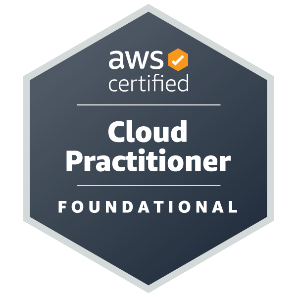
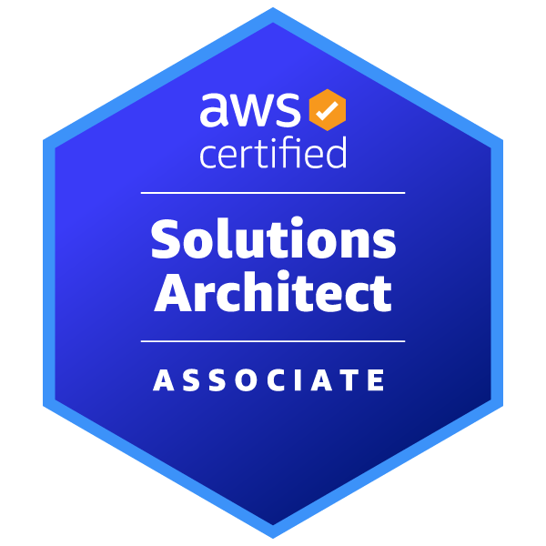
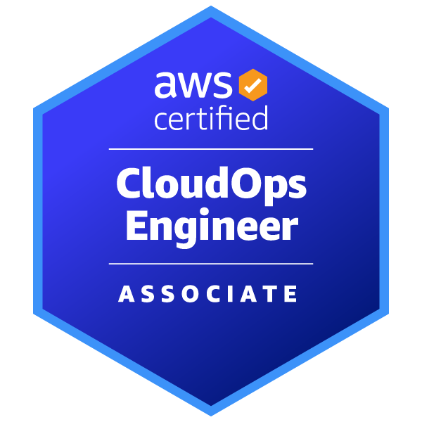
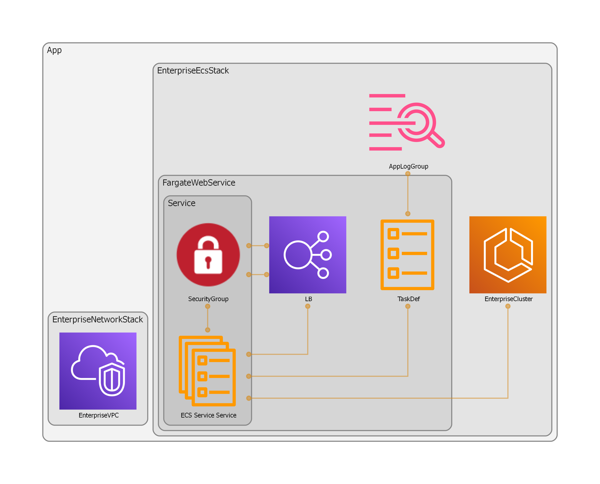
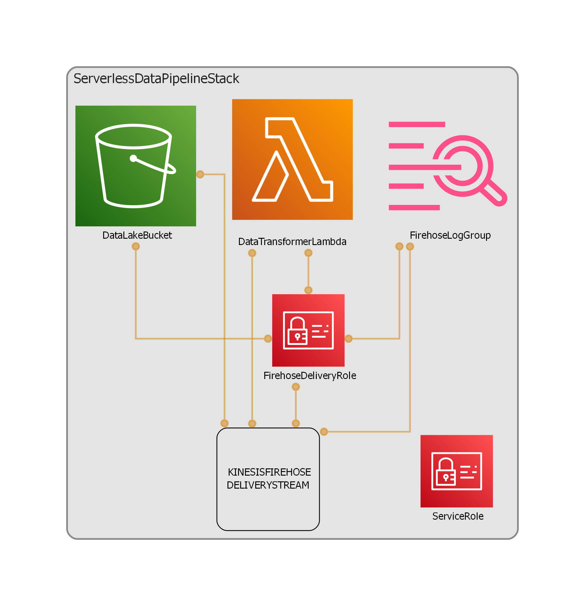
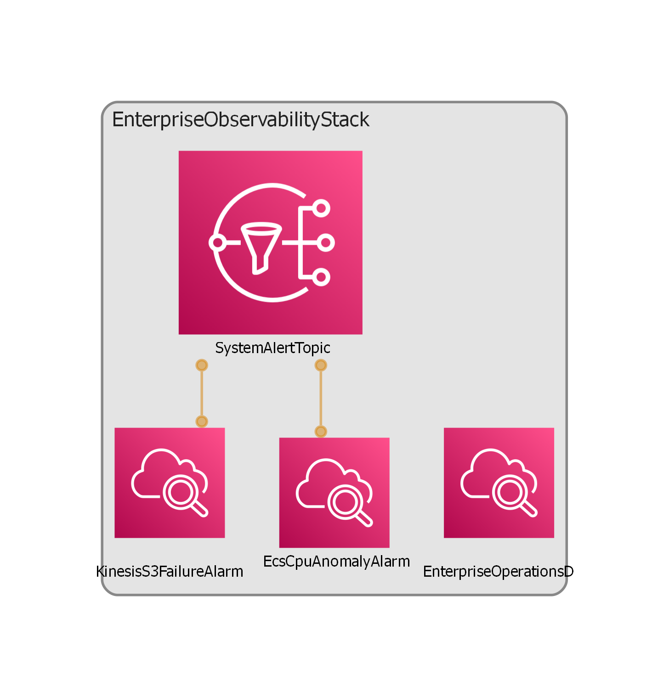
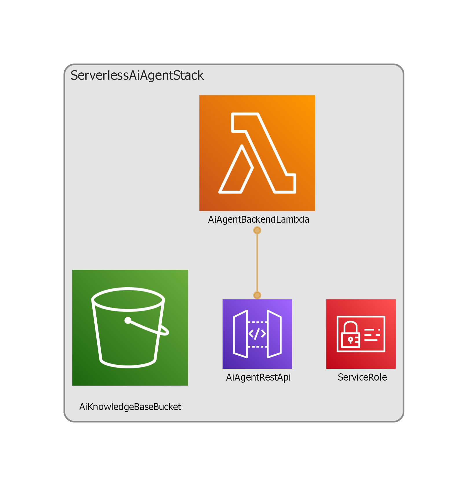

Hello, I'm Mikael Olsson
AWS Certified Solutions Architect | AWS Certified CloudOps Engineer
Leveraging 20+ years of solid foundation in enterprise IT infrastructure, I am now transitioning fully to the cloud. I design, deploy, and manage secure and scalable cloud workloads natively on the AWS platform.
About Me
I'm a passionate IT Professional with 20+ years of proven experience in architecting and creating enterprise digital solutions. Having built a strong backbone in traditional systems, I have now modernized my expertise to specialize fully in the AWS platform and its related cloud technologies. I love turning complex infrastructure problems into scalable, highly secure, and well-performing cloud solutions.
Cloud & DevOps
Core Engineering & Enterprise IT



Experience
IT Manager, Developer
Rix Data
Architected, managed, and held full life-cycle responsibility for a specialized medical record system (journalsystem) tailored for private healthcare providers. Progressed through key technical roles within the organization, ultimately taking on complete ownership of software development, product release pipelines, and systems infrastructure.
Key Integrations & Features Engineered:
- E-Prescription Gateway: Developed a secure integration against national prescription services (Alfa eRecept) implementing SOAP WebServices, complex XML formatting, and payload encryption.
- National Healthcare Network Sync (NPÖ): Engineered an interoperable data consumer module to securely query, parse, and ingest electronic health records from the Swedish National Patient Overview system (NPÖ).
- Messaging API Evolution (iP1): Architected and deployed an automated notification sub-system. Successfully migrated the legacy SOAP WebService engine into a modern, high-performance REST API architecture for enhanced security, bearer token management, and payload latency reduction.
The Cloud Evolution:
Leveraging this deep, 24-year foundation in enterprise software lifecycles, strict security compliance, and system ownership, I have modernized my expertise into cloud-native engineering. By combining my extensive experience in application architecture with my 3x AWS Certifications, I am uniquely positioned to help organizations build, secure, and operate automated cloud infrastructures on AWS.
Junior Developer and IT support
Solsta Konsult AB
Developed and maintained client projects using Informix database backend.
Featured Projects

Serverless Portfolio Website (Frontend & CI/CD)
A modern, fully automated, and highly secure serverless personal portfolio website hosted entirely on AWS. The entire infrastructure is managed as code...

AWS Enterprise Container Architecture with Python CDK & FastAPI
A highly secure, production-ready enterprise API built with Python FastAPI. The infrastructure is managed via AWS CDK...

Serverless Event-Driven Real-Time Data Pipeline
An automated, serverless data pipeline built with AWS CDK and Python. The architecture ingests real-time web telemetry streams via Amazon Kinesis Firehose, executes in-flight data cleansing using AWS Lambda, and stores the processed JSON logs inside a highly structured, Hive-partitioned S3 Data Lake [3.1].

Enterprise Observability & Incident Dashboard
An automated cloud monitoring solution built with AWS CDK to enforce proactive system visibility. The architecture provisions a centralized Amazon CloudWatch Dashboard featuring real-time metric alarms, anomaly detection, and automated alert routing via Amazon SNS to ensure production system stability.

Serverless Generative AI Agent with RAG
An intelligent, enterprise-grade AI chat assistant built with AWS CDK and Amazon Bedrock. Utilizing Retrieval-Augmented Generation (RAG), the serverless system securely processes private documents into a Vector Database to ground advanced LLMs (Claude) with contextual company insights.
Get In Touch
I'm always interested in new opportunities and interesting projects. Let's connect!